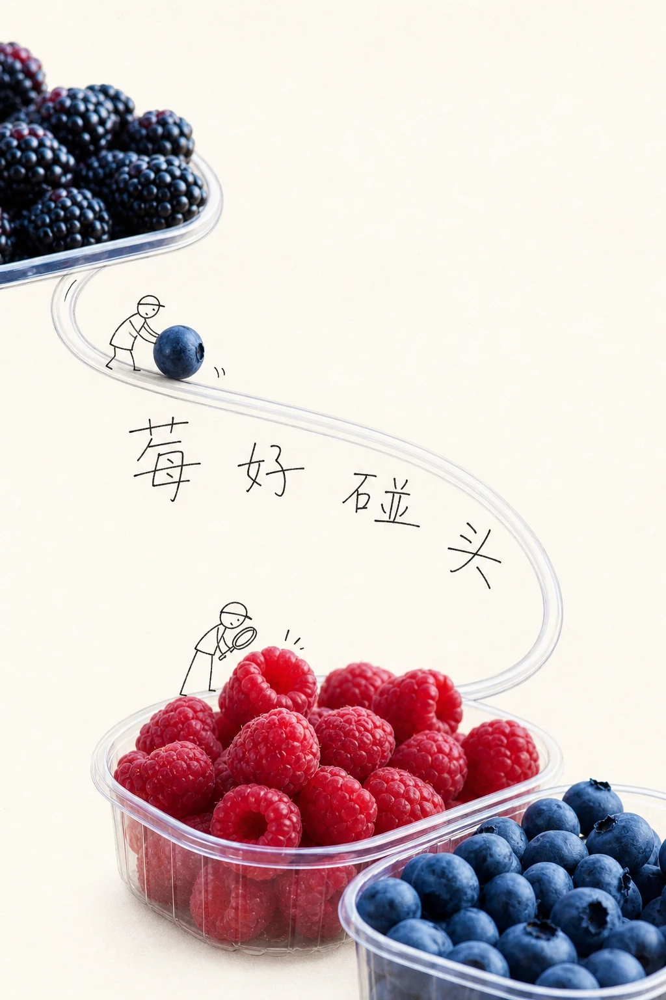
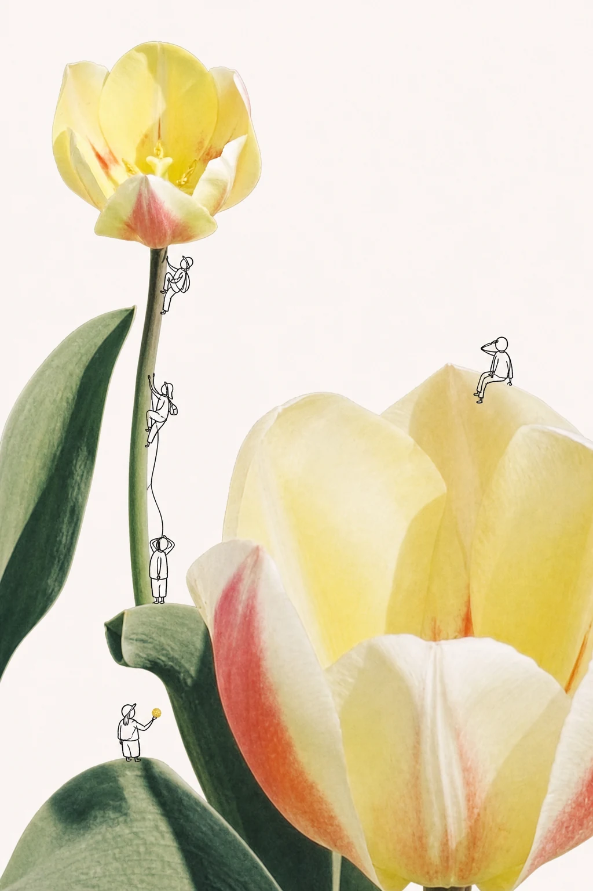

真实主体先站稳
主体保持摄影质感与可识别性，只提取原图中确实存在的辅助元素，不把整张图画成卡通。
PHOTO × HANDWRITING × DOODLE
保留照片的真实质感，用稚拙细黑线、松散短文案和功能性小人，把一张普通照片重组成两套留白充足的海报。
非官方风格研究项目，与喜茶品牌无隶属、授权或合作关系。


ONE PHOTO, TWO STORIES
文字融入版和无字叙事版共享同一张输入图，但分别解决裁切、留白、物件关系和动作线。它们不是同一版简单加字或删字。
主体保持摄影质感与可识别性，只提取原图中确实存在的辅助元素，不把整张图画成卡通。
从形状、动作、口感、季节和关系里写出 2–8 个字，允许轻微谐音与松弛幽默，但拒绝万能口号。
文字可以成为路径、标签、对话、桥梁或物体附着内容，而不是固定在左上角的大标题。
小人保持稚拙、无表情和功能性，用推、拉、攀、量、看等动作改变真实物件的叙事角色。
WORKFLOW
确认主锚点、辅助元素与必须保真的摄影信息。
先决定这张图在说什么，以及物件正在发生什么。
生成 3–5 个候选，只保留最自然、最贴合主体的一句。
文字版和无字版分别规划留白、路径与小人动作。
错字只重做文字层，主体失真则优先恢复照片质感。
PUBLIC TEST GALLERY
每组均展示原图、文字融入版和无字叙事版。生成图下方可查看并复制完整 Prompt。
~/.codex/skills/heytea-style-skill
$heytea-style-skill 使用这张照片生成文字融入版和无字叙事版。
文字融入版 × 1
无字叙事版 × 1
BOUNDARY
本项目只研究实物摄影、稚拙手写、功能性涂鸦与留白之间的关系。不得复制喜茶官方 Logo、吉祥物、包装标识、原文案、具体广告版式或其他受保护素材。